Cradle of culture
Southeast Asia and the Islands
Mainland valleys and the island world from Sumatra to the Philippines.
Deep Past and First Games 14


Galah panjang
Malaysia +1 · Street and playground games

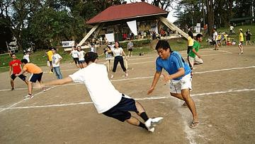
Patintero
Philippines · Street and playground games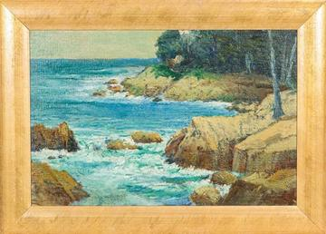
Pebbles
Laos · Dexterity and skill games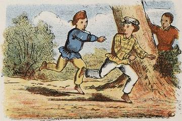
Tag
Myanmar · Street and playground gamesBatu Seremban / Five stones
Singapore · Dexterity and skill gamesFive stones
Malaysia +1 · Dexterity and skill gamesPiko
Philippines · Street and playground gamesSeed throwing
Cambodia · Dexterity and skill gamesThai pebbles
Thailand · Dexterity and skill games
River Valleys and First Cities 3

Gourd-crab dice
Vietnam · Board and table games
Classical Worlds 14


Kampong Ayer water-taxi dash
Brunei +1 · Water and winter sports
Khloy bamboo duct flute
Cambodia · Musical instruments
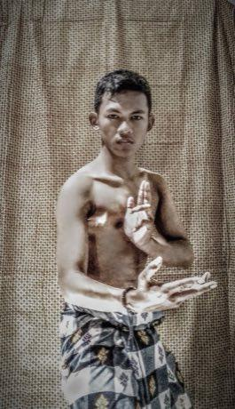
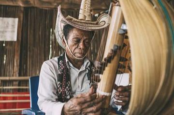
Sasando
Indonesia · Musical instrumentsSaung gauk
Myanmar · Musical instruments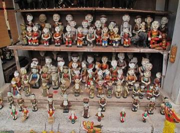
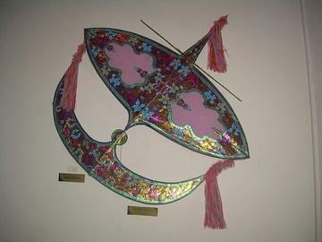
Wau bulan kite
Malaysia · Dexterity and skill games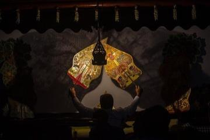
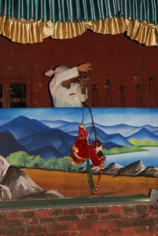
Encang kuda
Singapore · Street and playground games
Crossroads and Golden Ages 13


Floating market trader
Thailand · Board and table games

Sittuyin
Myanmar · Board and table gamesGaple dominoes
Indonesia · Board and table gamesKhmer chess
Cambodia · Board and table gamesMalay draughts
Malaysia · Board and table gamesTaiwanese mahjong
Taiwan · Board and table gamesThai checkers
Thailand · Board and table games
Age of Contact and Craft 6

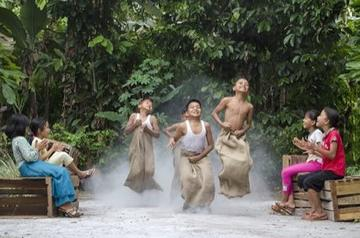
Independence-day field games
Indonesia · Racing
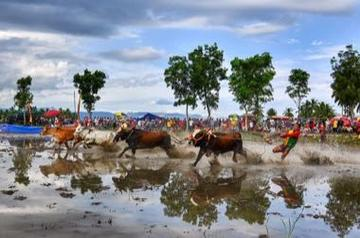
Pacu jawi
Indonesia · Racing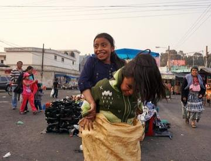

Thung chai basket-boat spinning
Vietnam · Racing
Modern Heritage 23
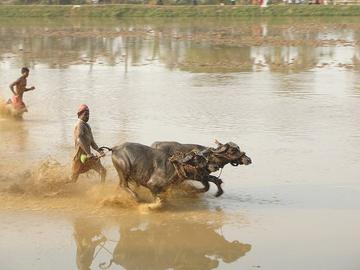
Buffalo race
Cambodia · Street and playground games

Cublak-cublak suweng
Indonesia · Street and playground games
Dikir barat
Malaysia · Street and playground games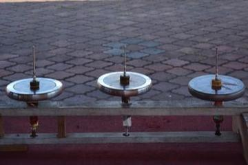
Gasing uri
Malaysia · Dexterity and skill games
Kaapse Klopse
Malaysia +1 · Street and playground games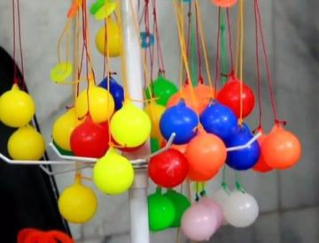
Lato-lato
Indonesia +1 · Toys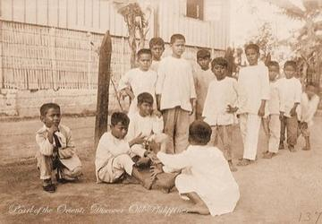
Luksong tinik
Philippines · Street and playground games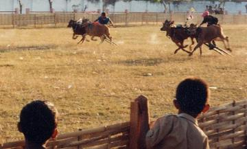
Madura bull racing
Indonesia · Street and playground games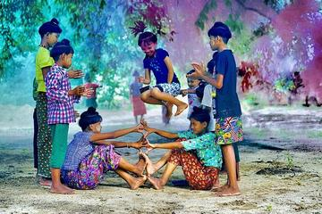
Phankhon
Myanmar · Street and playground games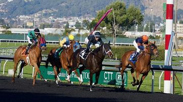
Regional pony race meets
Timor-Leste · Street and playground games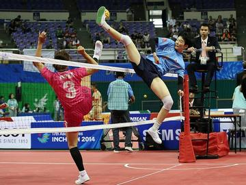
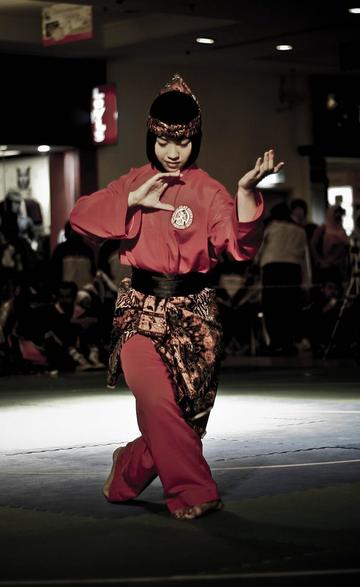
Silat Melayu
Brunei · Street and playground games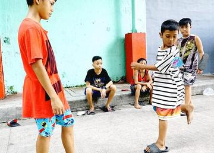
Sipa
Philippines · Street and playground games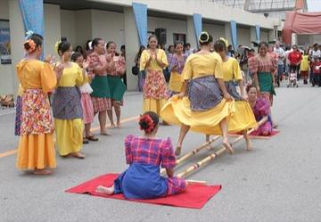
Tinikling
Philippines · Dexterity and skill games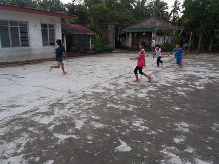
Chapteh shuttlecock
Singapore · Dexterity and skill gamesHide the scarf
Cambodia · Street and playground gamesScarf-ball toss
Cambodia · Street and playground gamesTikhi
Laos · Street and playground games
Living Traditions 23
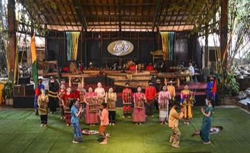
Angklung bamboo chime ensemble
Indonesia · Musical instruments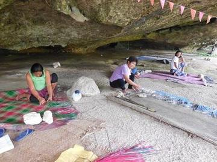
Banig mat weaving
Philippines · Crafts and making
Batik wax-resist pattern studio
Indonesia +1 · Crafts and makingPlay preview · in the Textile Crafts of the World app
Bo Sang umbrella painting
Thailand · Crafts and making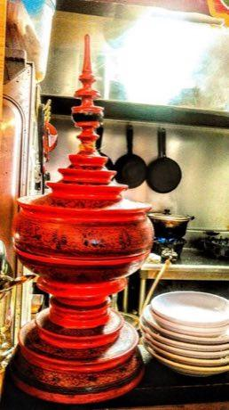
Burmese lacquerware engraving
Myanmar · Crafts and making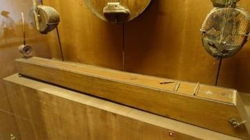
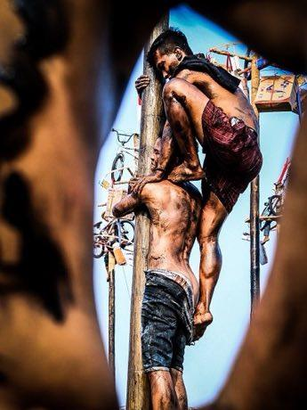
Greasy pole climb
Indonesia · Performance and storytelling
Jeepney painting
Philippines · Crafts and making
Ketupat
Malaysia +2 · Crafts and making
Khene
Laos · Musical instruments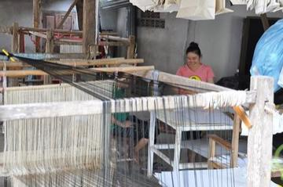
Lao silk brocade weaving
Laos · Crafts and making
Luk chup
Thailand · Crafts and making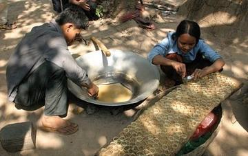
Palm sugar boiling and mould-filling
Cambodia · Crafts and making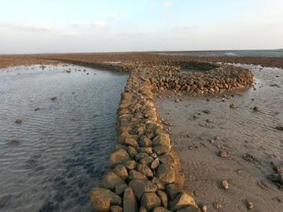
Penghu Stone Weir Tide Puzzle
Taiwan · Crafts and making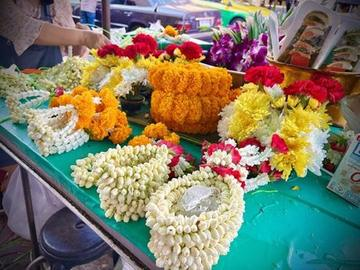
Phuang malai flower garland threading
Thailand · Crafts and making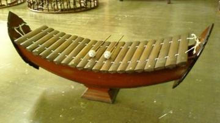
Ranat ek
Thailand · Musical instruments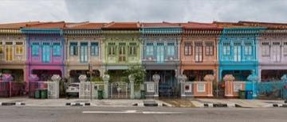
Shophouse facade builder
Singapore +2 · Crafts and making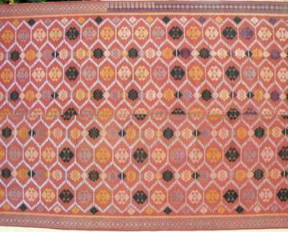
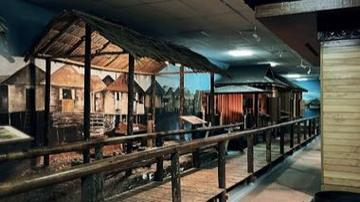
Stilt-village builder
Brunei +1 · Crafts and making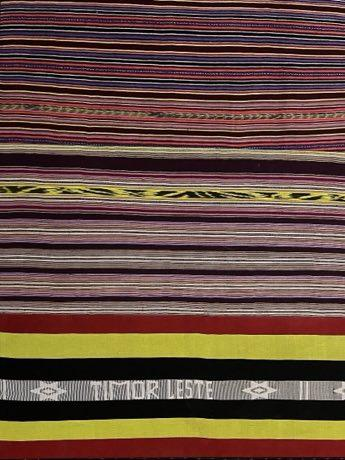
Tais
Timor-Leste · Crafts and making
Thai fruit and vegetable carving
Thailand · Crafts and making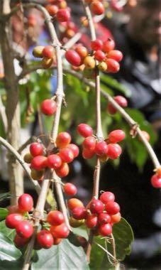
Timorese coffee cherry harvest and sort
Timor-Leste · Crafts and making